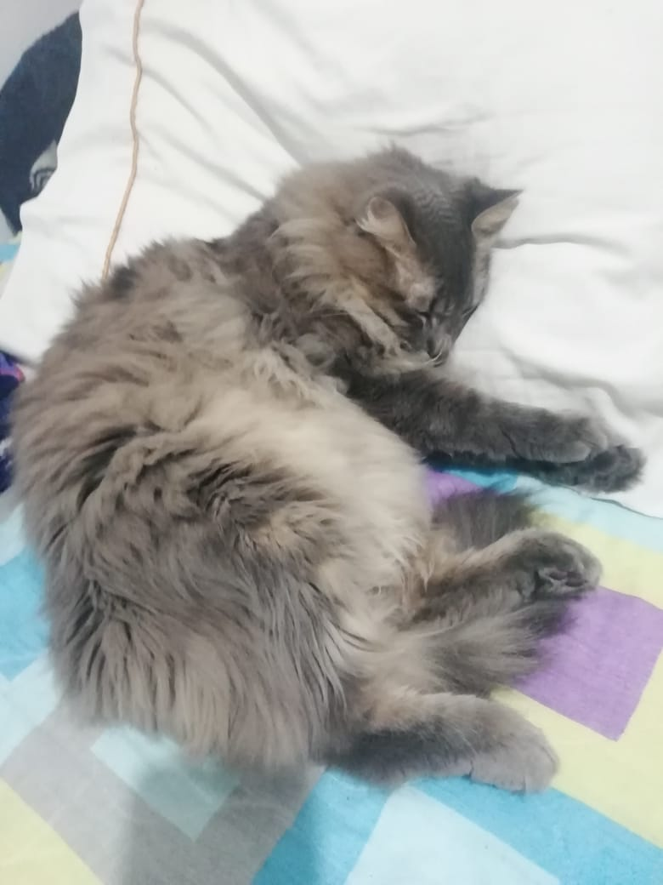
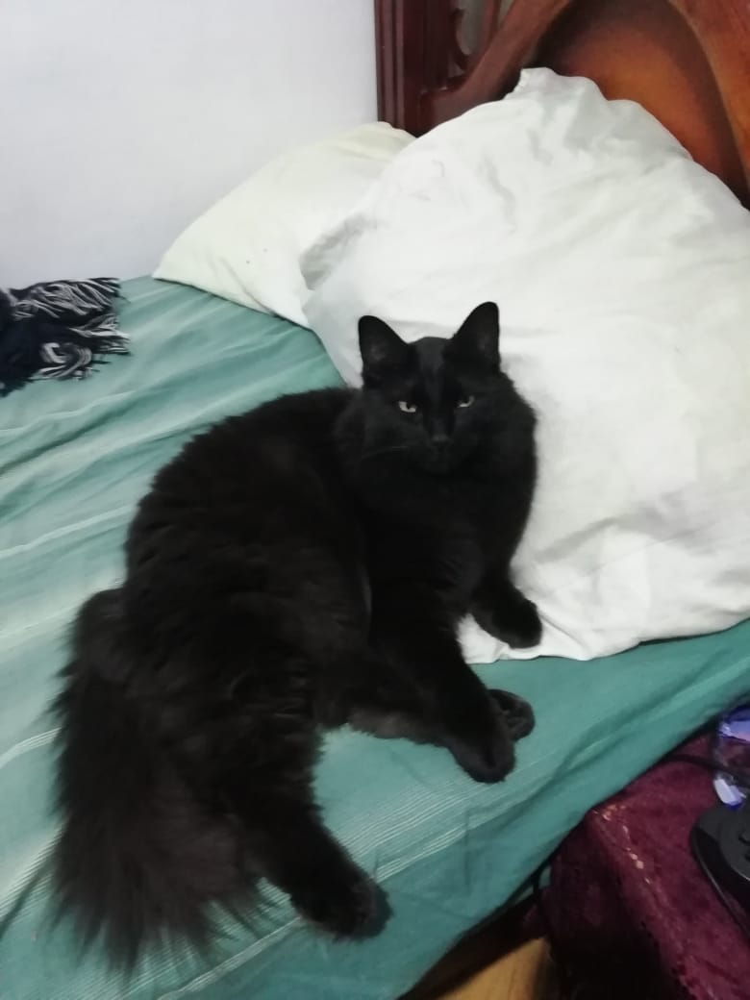
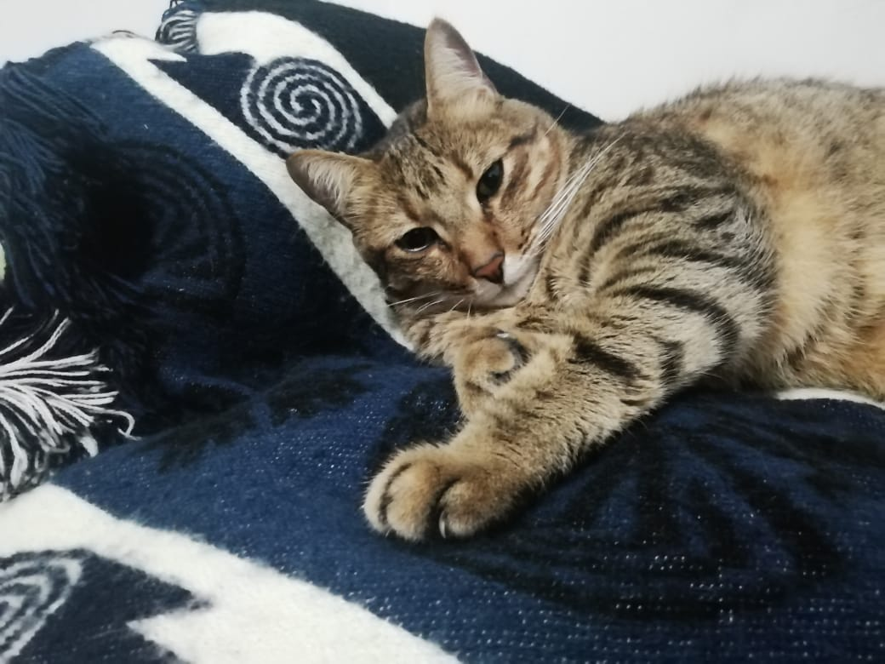

About me
Hi! I'm Kleydert Cardona Cataño, my friends called me "Mierdert", because i suck playing video games online with them hahahahahahahaha. I was Born on 1984 36 years ago and working like a slave about 18 years. I got bored with my life when one Sunday I was working while my friends were playing games or going out on dates with their loves, So I decided to return to the academy and become a great engineer and create a better future for myself. I love Music so much!! play it, feel it... it's the best of the life. Actually i'm studying my pregrade in Systems Engineer and i live it. It's hard to do when you are working and studying at the same time, but i'll bever give up with out figth and win out of course. I really like go outside and walk on the nature mountains, rivers, streams, etc. But my time is low, so i can't did it all the time like i want.
I want to be a great Engineer, make a greats codes in my future work. Focusing in AI, Data Science, Machine learning and why not, make my own video game and sell them to all.

My work experience
I Worked in Costume Service so virtual as physically in the last 6 years in 3 differents companies. I also worked on the family business about 6 or 7 years, is this last one I was the logistics manager and I was a school teacher for 4 months and it was the best job I have ever had. I'm a great coworker, when you are honest, dedicated, responsible, respectful, ambitious, funny, caring, etc. getting a good work environment is simple and this describes me a lot.
Let's see some more about me
Dont be Afraid.
He is one of the best comedians I have ever seen. One day I was listening to music on YouTube, I wanted to listen to a string quartet and the search engine suggested "Yayo and the worker quartet", in my innocence I thought it was a string quartet where they met after their construction work or something like that , but no and I didn't know what to expect. It is about a hidden camera that they make to an international guest, where the language used by Yayo is very explicit and macho, as well as being direct and irritable ... just great !!! I cried with laughter for several minutes and from there I became more of a lover of black humor.
My cats :3
Halford 
Orion 
Tripper 